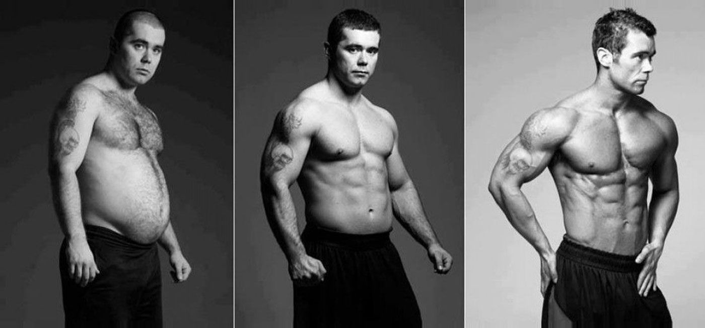

Diet Plan for Weight Loss
Understand the Science Behind Weight Loss
Weight loss and gain revolve around caloric consumption and expenditure. Simply put, you lose weight when you consume fewer calories than you spend and gain weight when you consume more calories than you lose.
To drop those extra kilos, all you need to do is eat within your calorie budget and burn the required number of calories.
However, simply determining how many calories your body needs isn’t enough. After all, 2 samosas(550 kcal), 3 slices cheese pizza(450 kcal) and 3 gulab jamuns(450 kcal) may be within your daily requirement of 1500 calories, but these unhealthy food choices will eventually lead to other health problems like high cholesterol and blood sugar.
To lose weight healthily, you also need to ensure your diet plan is balanced i.e. covers all food groups and provides all the nutrients you need for good health.
1200 Calorie Weight Loss Sample Diet Plan
A lot can be spoken about what goes into an ideal diet chart. However, one’s nutritional requirement varies based on various factors. It could change depending on sex. Geography can play a role as well, with North Indian diets being largely different from South Indian ones. So, here meal preferences come into play since the consumption of food by a vegetarian or a vegan differs largely from that by a non-vegetarian. However, we have put together a diet plan ideal for weight loss with Indian food. This 7-day diet plan also known as a 1200-calorie diet plan is a sample, and should not be followed by any individual without consulting a nutritionist.
Diet Plan
Day 1 - Weight Loss Diet Plan Chart
| Day 1 | Diet Chat |
|---|---|
| 6:30 AM | Cucumber Detox Water (1 glass) and Oats Porridge in Skimmed Milk (1 bowl) |
| 8:00 AM | Mixed Nuts (25 grams) |
| 2:00 PM | Skimmed Milk Paneer (100 grams) |
| 4:00 PM | Mixed Vegetable Salad (1 katori) And Dal(1 katori)Gajar Matar Sabzi (1 katori) |
| 5:30 PM | Cut Fruits (1 cup) Buttermilk (1 glass) |
| 8:50 PM | Mixed Vegetable Salad (1 katori) and Dal (1 katori) Lauki Sabzi (1 katori) |
| 9:00 PM | Roti (1 roti/chapati) |
Day 2 - Weight Loss Diet Plan Chart
| Day 2 | Diet Chat |
|---|---|
| 6:30 AM | Cucumber Detox Water (1 glass) |
| 8:00 AM | Curd (1.5 katori) Mixed Vegetable Stuffed Roti (2 pieces) |
| 2:00 PM | Mixed Vegetable Salad (1 katori) And Lentil Curry (0.75 bowl) Methi Rice (0.5 katori) |
| 4:00 PM | Apple (0.5 small (2-3/4″ dia)) Buttermilk (1 glass) |
| 5:30 PM | Coffee with Milk and Less Sugar (0.5 tea cup) |
| 8:50 PM | Mixed Vegetable Salad (1 katori) And Sauteed Vegetables with Paneer (1 katori) Roti (1 roti/chapati) |
| 9:00 PM | Green Chutney (2 tablespoon) |
Day 3 - Weight Loss Diet Plan Chart
| Day 3 | Diet Chat |
|---|---|
| 6:30 AM | Cucumber Detox Water (1 glass) |
| 8:00 AM | Skim Milk Yoghurt (1 cup (8 fl oz)) Multigrain Toast (2 toast) |
| 2:00 PM | Mixed Vegetable Salad (1 katori) And Sauteed Vegetables with Paneer (1 katori) Roti (1 roti/chapati) |
| 4:00 PM | Banana (0.5 small (6″ to 6-7/8″ long)) Buttermilk (1 glass) And Green Chutney (2 tablespoon) |
| 5:30 PM | Tea with Less Sugar and Milk (1 teacup) |
| 8:50 PM | Mixed Vegetable Salad (1 katori) |
| 9:00 PM | Lentil Curry (0.75 bowl) Methi Rice (0.5 katori) |
Day 4 - Weight Loss Diet Plan Chart
| Day 4 | Diet Chat |
|---|---|
| 6:30 AM | Cucumber Detox Water (1 glass) And Fruit and Nuts Yogurt Smoothie (0.75 glass) |
| 8:00 AM | Egg Omelette (1 serve(one egg)) |
| 2:00 PM | Skimmed Milk Paneer (100 grams) Mixed Vegetable Salad (1 katori) And Green Gram Whole Dal Cooked |
| 4:00 PM | Bhindi sabzi (1 katori) and Roti (1 roti/chapati) and Orange (1 fruit (2-5/8″ dia)) Buttermilk (1 glass) |
| 5:30 PM | Coffee with Milk and Less Sugar (0.5 teacup) |
| 8:50 PM | Mixed Vegetable Salad (1 katori) |
| 9:00 PM | Palak Chole (1 bowl) Steamed Rice (0.5 katori) |
Day 5 - Weight Loss Diet Plan Chart
| Day 5 | Diet Chat |
|---|---|
| 6:30 AM | Cucumber Detox Water (1 glass) |
| 8:00 AM | Skimmed Milk (1 glass) Peas Poha (1.5 katori) |
| 2:00 PM | Skimmed Milk Paneer (100 grams) Low Fat Paneer Curry (1.5 katori) Missi Roti (1 roti) |
| 4:00 PM | Mixed Vegetable Salad (1 katori) Papaya (1 cup 1″ pieces) Buttermilk (1 glass) |
| 5:30 PM | Tea with Less Sugar and Milk (1 teacup) |
| 8:50 PM | Mixed Vegetable Salad (1 katori) Curd (1.5 katori) Aloo Baingan Tamatar Ki Sabzi (1 katori) |
| 9:00 PM | Roti (1 roti/chapati) |
Day 6 - Weight Loss Diet Plan Chart
| Day 6 | Diet Chat |
|---|---|
| 6:30 AM | Cucumber Detox Water (1 glass) |
| 8:00 AM | Mixed Sambar (1 bowl) Idli (2 idli) Skimmed Milk Paneer (100 grams) |
| 2:00 PM | Mixed Vegetable Salad (1 katori) And Curd (1.5 katori) Aloo Baingan Tamatar Ki Sabzi (1 katori) Roti (1 roti/chapati) |
| 4:00 PM | Coffee with Milk and Less Sugar (0.5 tea cup) |
| 5:30 PM | Cut Fruits (1 cup) Buttermilk (1 glass) |
| 8:50 PM | Mixed Vegetable Salad (1 katori) and Green Gram Whole Dal Cooked (1 katori)Bhindi sabzi (1 katori) |
| 9:00 PM | Roti (1 roti/chapati) |
Day 7 - Weight Loss Diet Plan Chart
| Day 7 | Diet Chat |
|---|---|
| 6:30 AM | Cucumber Detox Water (1 glass) |
| 8:00 AM | Besan Chilla (2 cheela) Green Garlic Chutney (3 tablespoon) and Skimmed Milk Paneer (100 grams) |
| 2:00 PM | Mixed Vegetable Salad (1 katori) and Palak Chole (1 bowl) Steamed Rice (0.5 katori) |
| 4:00 PM | Apple(0.5 small (2-3/4″ dia)) Buttermilk (1 glass) |
| 5:30 PM | Tea with Less Sugar and Milk (1 teacup) |
| 8:50 PM | Mixed Vegetable Salad (1 katori) |
| 9:00 PM | Low Fat Paneer Curry (1 katori) Missi Roti (1 roti) |
HealthifyMe Suggestion
When trying to lose weight, the most common question is what diet plan should one follow. There are so many fad diets and myths on food that planning a diet can seem like a chore!
Since there are many factors like age, sex, physical activity, allergies and food preferences that can impact your diet pan, its best to seek the advice of a nutritionist who can customize a safe and effective plan just for you.
Any diet plan should be sustainable, not too restrictive or expensive and should include locally available seasonal foods. Along with a personalised exercise routine, a good diet plan will surely help reach your goal.
Conclusion
A diet plan should include all macro and major micronutrients in order to fulfil the body’s requirements. Remember, all bodies are different and have varying needs thus, what may suit one or work for someone may be the same for the other. Thus, it’s best to get customised guidance on diet plans and exercise regimes in order to achieve your goal.